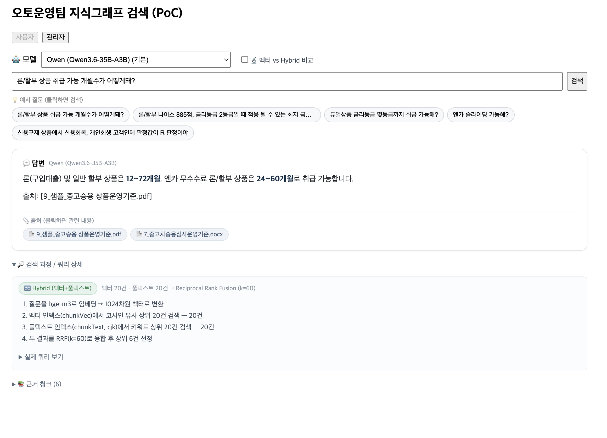

벡터 챗봇을 넘어서:
Hybrid GraphRAG + 의도 라우팅
기존 임베딩 검색 챗봇 팀을 위한 기술 공유 — 왜 바꿨고, 어떻게 동작하며, 무엇을 배웠나
왜 벡터 검색만으로는 부족했나
이 도메인의 까다로움
- 3종 유사 출처(FAQ·규정·운영기준)가 비슷한 상품을 다뤄 교차참조가 잦다
- 답이 대부분 정확한 수치·등급·판정값 (예: 21.0% G/L, R판정 취급불가)
- 표·코드·약어가 많아 의미 유사도만으로는 정밀도 부족
실제로 부딪힌 벽 — "방법이 아니라 데이터"
- 깨진 표 — 금리·네고표가 1차원 텍스트로 뭉개져 정밀값 추출 불안정
- 표기 차이 — "듀얼"(한글) vs
Dual(영문) → 0건 - 시멘틱 한계 — "취급 가능한 최대 기간?"으로
12~72개월을 의미로 못 찾음
가설 — 그래프가 가진 힘
벡터가 "비슷한 문단"을 찾는다면, 그래프는 사실을 연결한다: 멀티홉·교차참조 · 정밀값 조회(노드 속성) · 설명가능성↑·환각↓. → 여기에 임베딩(의미)을 결합하면 벡터 단독보다 우수할 것이다.
GraphRAG 란? — 그리고 그 한계
문서를 엔티티·관계의 지식그래프로 구조화해, 연결된 사실을 모아 답한다. 벡터가 "비슷한 문단"을 찾을 때 GraphRAG는 "연결된 사실"을 찾는다.
보완하는 것
- 교차참조 — 관계를 따라 3종 출처를 잇는 멀티홉
- 정밀값 — 노드 속성에 실제 값(21.0%·12~72개월·R판정)
- 신뢰 — 명시적 출처·근거로 설명가능
한계 (우리가 실제로 겪은 것)
- 구축 비용 — 추출에 LLM 다수 호출, 느림
- 추출 품질 — 깨진 PDF 표 → 값 오인식
- 스키마 드리프트 — 유형 무한확장 → 온톨로지로 제약
- 커버리지·정확매칭 — 없는 사실 못 답,
CONTAINS는 동의어에 취약
세 개의 축으로 보완한다
질문 유형에 따라 최적의 근거·경로를 고른다. 이 발표의 뼈대.
Hybrid 검색
임베딩(의미) + cjk 풀텍스트(정확) + 동의어 사전을 RRF로 융합. 표현이 달라도, 정확값이어도 잡는다.
구조화 그래프
깨진 표를 값 엔티티로 정제(온톨로지 7종). 청크가 서술을, 그래프가 정밀값을 맡는다.
의도 라우팅 + 결정적 테이블
수치형 질의는 LLM 없이 큐레이션 테이블 값으로 확답. 빈응답·환각을 원천 차단.
유사어 사전 & 한국어 토큰화
한↔영 별칭 사전
질의·색인 양쪽에서 동의어를 확장한다.
듀얼 → 듀얼 · Dual · Dual_C · Dual_O엔카 → encar/슬라이딩 → sliding금리등급 → 등급
"듀얼"로 물어도 영문 Dual 청크를 찾음.
cjk 풀텍스트 분석기 (Lucene)
한글을 2글자 바이그램으로 토큰화.
금리등급 → 금리 · 리등 · 등급- 부분 일치 · 오타 허용 · 관련도 점수
정확 문자열 매칭(CONTAINS)의 brittle함 보완.
왜 Hybrid — 세 검색의 상호 보완
| 방식 | 강점 | 약점 |
|---|---|---|
| 임베딩(벡터) | 의미 유사 — 표현 달라도 찾음 | 정확값·코드·약어에 약함, 오탐 |
| 풀텍스트(cjk) | 정확 키워드·한글 토큰·오타 허용·점수 | 의미·동의어 못 이음 |
| 그래프(구조화) | 정밀값·관계·멀티홉·설명가능 | 구축비용, 추출 누락 시 공백 |
| Hybrid | 벡터(의미) + 풀텍스트(정확) + 그래프(정밀값)로 서로의 약점을 메움 | |
데이터 흐름 (적재)
원본 문서
파싱·청크화
인덱싱
+ cjk 풀텍스트
구조화 그래프
값 엔티티
수치 테이블
(결정적)
저장소
Neo4j 단일 그래프 — 청크·임베딩·구조화 엔티티·출처(source_file) 일원화.
임베딩
사내 게이트웨이 /v1/embeddings (bge-m3) — OpenAI 호환.
LLM (선택형)
기본 HCX-30B-Text · Qwen3.6 · HyperCLOVA X Think 32B · Claude Opus 4.8.
질문 한 건이 처리되는 과정 (라우팅)
질의 분석
의도 라우팅
descriptive
ROUTE / RETRIEVE / LLM_*).
RRF — Reciprocal Rank Fusion
왜 RRF?
벡터 점수(코사인)와 풀텍스트 점수(BM25)는 스케일이 달라 직접 더할 수 없다.
RRF는 점수가 아니라 순위(rank)만 합산 → 스케일 차이에 강건.
수식 & 직관
score(d) = Σ 1 / (k + rank_i(d)) (k=60)
두 검색 모두에서 상위인 문서가 최종 1위 → 의미·키워드가 함께 지지하는 근거 우선.
구조화 그래프 — 깨진 표를 "값 엔티티"로
같은 운영기준을 두 레이어로 저장: 원문 청크(검색 주 대상) + 정제된 사실 카드(정밀값).
온톨로지 — 화이트리스트 7종
유형을 고정해 스키마 드리프트 방지.
값을 속성으로 보존
RateGrade {grade:2, gl_rate:"21.0%", max_months:72}
Decision {code:"R", result:"필터링 취급 불가"}
깨진 표 대신 정밀값을 LLM 컨텍스트에 직접 주입.
스키마 한눈에 — TBox(온톨로지) / ABox(인스턴스)
사실은 어떻게 만들어지나 — build_structured
청크
LLM 추출
+ 속성 예시
JSON 산출
relations
검증
외 폐기
병합
dedup
적재
멱등
의도 라우팅 — 질문 유형별 경로 분기
LLM 없이 키워드 휴리스틱으로 3분류. 빠르고 결정적.
| route | 판정 (힌트) | 처리 |
|---|---|---|
| numeric | 수치 힌트만 — 금리·등급·개월·%·네고·프로모션·숫자 | 결정적 테이블 우선 |
| mixed | 수치 + 규칙 힌트(가능·까지·판정·대상·여부·취급) | 테이블 시도 후 Hybrid+LLM |
| descriptive | 수치 힌트 없음 (예: "성능점검기록부가 뭐야?") | Hybrid + LLM |
예시
금리등급 2등급 최저금리 → numeric듀얼 몇 등급까지 취급 가능? → mixed성능점검기록부가 뭐야? → descriptive
튜닝 포인트
힌트 "점"은 "점검·점포"에 오매칭 → 제외(점수는 숫자로 이미 포착). 애매 표현("될 수 있는")은 힌트 확장/LLM 분류로 보강 예정.
결정적 테이블 답변 — LLM 없이 확답
수치형은 깨진 표를 LLM에 맡기지 않고 큐레이션 CSV 값 → 템플릿으로 조립 → 빈응답·환각 원천 제거.
질의 파싱
NICE·KCB
테이블 조회
nego·promotion
정책·판정
가능/불가
템플릿 답
정밀값 확답 (5등급)
내국인 24.0% · 거점장 13.0%, 증빙 16.0%
외국인 12개월 24.0%···48개월 51.0% · 거점장 16%, 증빙 18%
고객유형·개월별 자동 분기, 명시된 네고만 표기
가능/불가 판정 (프로모션)
"NICE 955, KCB 800 가능?" → "아니요, 불가능. KCB 800점(기준 976점) 미달"
사용자 값 vs 임계값 대조 → 가능/불가/확인필요
검색 품질의 핵심 — 컨텍스트 구성
정밀 검색 ≠ 정답. 정확도는 근거를 무엇을·어떤 순서로·어떤 권위로 담느냐가 좌우한다.
문제 — 구조화 사실이 오히려 방해
저품질·주변적 fact가 앞자리·"사실" 권위로 청크 원문의 뉘앙스를 가려 오답.
예: "프로모션 법인 가능?"의 (개인고객 限)은 청크에만 존재.
대응 — 답변 근거 3층
- 결정적 테이블 — 정밀값, 최우선(확답)
- 원문 청크 — 1차 서술 근거
- 구조화 사실 — 보조("상충 시 원문 우선")
+ 저점수 fact 컷 · 입력 컨텍스트 캡
answer_rules.py, 프롬프트는 prompts.py, 전체 규칙은 단일 카탈로그(docs/14)로 관리.UI 데모 — "벡터만" vs "Hybrid"
질문: "론/할부 상품 취급 가능 개월수가 어떻게돼?" · 같은 질문, 두 방식 비교
론·할부 모두 취급 기간은 12~72개월입니다.
→ 상품 구분 없이 뭉뚱그림
상품별 취급 가능 기간:
- 일반 할부/론: 12~72개월
- 신용구제(SP_R): 1~6개월
- 엔카 무수수료: 24~60개월
→ 상품별 정밀·완전 + 출처 추적
실제 UI 화면

assets/demo_single.png
assets/demo_compare.png핵심 교훈 — 다음 프로젝트를 위해
검색 품질 ★
- 컨텍스트 구성이 핵심 — 원문 1차, 그래프 보조+"상충 시 원문 우선"
- 정밀값(금리·판정)은 LLM 아닌 결정적 테이블로
- RRF가 정답 청크 밀어냄 → 벡터 상위 N 보장
LLM 연동
- 긴 컨텍스트에서만 빈 응답 → 입력 길이 한도 초과 → 컨텍스트 캡
- OpenAI 호환:
base_url=/v1, 커스텀은extra_body - 배치 추출=비추론(Qwen), 대화=thinking
환경 · 데이터
- venv는 홈에(클라우드 폴더 금지)+터미널마다 활성화
- 한글 NFC/NFD, 한↔영 표기(듀얼/Dual) 점검
- PDF 표 뭉개짐 → 정답이 원문에 읽히나 선진단
Neo4j · 프로세스
- 공유 DB 차원/라벨 충돌 → 격리
- 인덱스 이름 자동탐지 +
awaitIndexes() - 구조화 로깅(ROUTE/RETRIEVE/LLM) 기본 탑재
docs/09)한 줄 요약
의미(벡터) + 정확/한글(풀텍스트) + 정밀값(그래프)를 RRF로 융합하고,
수치형은 의도 라우팅 → 결정적 테이블로 확답하는 Hybrid GraphRAG.
축 ① Hybrid
의미+정확+RRF
축 ② 그래프
값 엔티티·출처
축 ③ 라우팅
결정적 확답
감사합니다 · Q&A